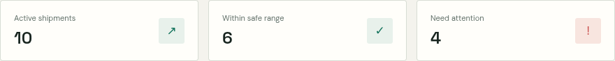
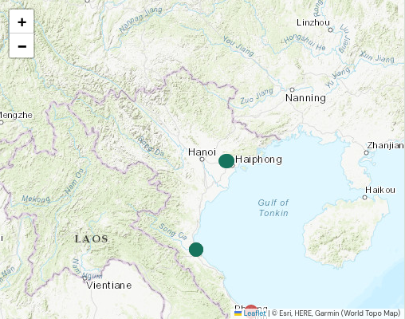
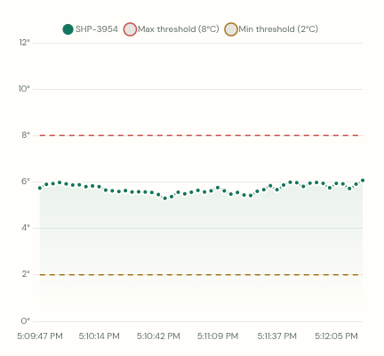
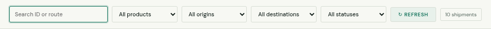
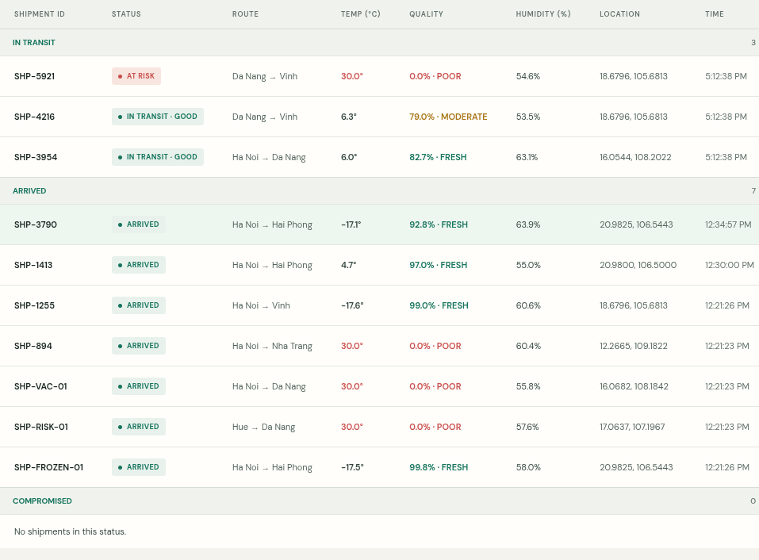
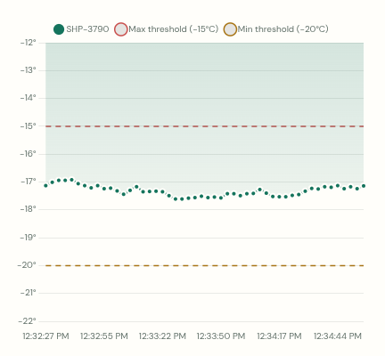

Cold Chain Logistics Dashboard
User Guide: Shipment Monitoring and Quality Assessment
a. Shipment Summary

Function: Summarizes the shipment count, shipments within their safe temperature ranges, and shipments needing attention.
Steps:
- Read Active shipments to see the number of records on the dashboard.
- Compare Within safe range with Need attention.
- For a shipment needing attention, locate its ID in the activity table and review its temperature and history.
b. Creating a Shipment

Function: Adds a new shipment to the monitoring dashboard.
Steps:
- Select the container type, origin, and destination.
- Select Create shipment once and wait for the result message below the form.
- After a successful response, find the new shipment in the activity table.
c. Monitoring Shipment Location

Function: Shows current shipment positions, selected routes, and destinations on the map.
Steps:
- Select a shipment row in the activity table.
- Review the colored shipment marker and highlighted route.
- Use the map controls to zoom in or out and inspect the route.
d. Reviewing Temperature History

Function: Plots sensor readings against the selected container’s minimum and maximum temperature limits.
Steps:
- Select the shipment to review from the activity table.
- Compare the measured temperature line with the dashed limit lines.
- Use the chart legend and time labels to interpret the readings.
e. Searching and Filtering Shipments

Function: Filters the shipment table by shipment ID or route, product, origin, destination, and status.
Steps:
- Enter a shipment ID or route name in the search field.
- Select a product, origin, destination, or status. Multiple filters can be combined.
- Review the result count. Select the “All” option to clear a filter.
- Select Refresh to reload shipment and telemetry data.
f. Assessing Shipment Quality

Function: Estimates quality from the latest temperature’s deviation from the container’s target midpoint.
Steps:
- Find the shipment’s latest temperature and its Quality score.
- Interpret the score: FRESH is 80% or higher; MODERATE is 50% to below 80%; POOR is below 50%.
- Compare the result with the container temperature limits and any active alert.
g. Reviewing Completed Shipment History

Function: Keeps completed shipments available for review while stopping new live updates for those records.
Steps:
- Select Completed in the status filter.
- Select the shipment row to view its route and historical temperature chart.
- Confirm that the chart subtitle says Historical readings.
- The dashboard shows up to 50 newest completed shipments and up to 50 readings per shipment. Older database records are not deleted.
h. Connection and Troubleshooting
Function: Helps restore dashboard data and live monitoring when the backend connection is unavailable.
Steps:
- Confirm the header says “Connected to backend”.
- If connection fails, confirm that the backend and PostgreSQL are running.
- Use Refresh after the connection is restored.
- If map tiles are missing while shipment data is present, check the Internet connection.
Dashboard URL: http://127.0.0.1:5500/?apiPort=8081&wsPort=8080